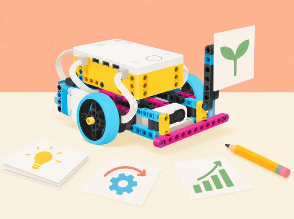
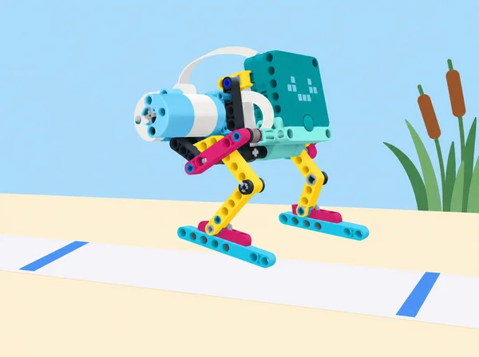

Dissenyar, provar i compartir
🏷️ Disseny iteratiu i comunicació
🌱 Situació, repte i intenció
Té punts de contacte amb Ideas, the LEGO way! i altres recursos, però conserva la seqüència i els objectius específics d’aquesta unitat.
🎯 Aprenentatges i vocabulari
- Convertir una necessitat en requisits i una proposta de prototip que es puga provar.
- Usar pseudocodi per explicar el procés abans de programar-lo.
- Iterar el disseny mecànic o digital a partir de dades i retorn d’altres equips.
- Comunicar els usos, les limitacions i les decisions d’automatització d’una proposta.
🧰 Materials i preparació
Set SPIKE Prime 45678, app SPIKE i dispositiu per parella; peces de cartó i paper, llapis, targetes de criteris, quadern de procés i una maqueta d’aula o biblioteca. Per a la mostra audiovisual, un dispositiu de gravació és opcional i sempre pot substituir-se per una presentació en directe o una seqüència de diapositives. No cal BricQ Motion ni expansió 45681. Comproveu hubs, ports i programes abans de provar el mecanisme;
limiteu velocitat i massa, i atureu el hub abans de fer canvis físics.
📅 Seqüència didàctica
Iteració i perseverança: el saltador de l’aiguamoll (Hopper Race, 90 min)
Fase 1 · Activem i prediem
Mostreu imatges o un vídeo breu d’éssers vius o robots que es desplacen sense rodes i pregunteu com ho aconsegueixen.
Fase 2 · Explorem i construïm
Per parelles, munteu un saltador SPIKE Prime amb el mecanisme disponible a l’app com a punt de partida o amb una solució pròpia de potes articulades; no pot usar rodes ni peces que facen de roda. Executeu el programa inicial i registreu si arriba a la meta, el temps i si es desvia. Feu tres proves comparables amb dos valors de velocitat/potència (per exemple, 50% i 100%) i manteniu la mateixa línia, superfície i posició inicial.
Modifiqueu després la geometria de les potes (una variable cada vegada) i observeu si la llargària de la gambada, l’adherència o la fricció canvien el desplaçament. Anoteu cada versió amb esbós o fotografia, canvi, predicció, resultat i explicació; useu la taula per decidir quin disseny és més eficient, no sols quin arriba primer.

Fase 3 · Expliquem i registrem
Feu una cursa curta per torns. Una parella observa la prova d’una altra i dona feedback concret basat en el que ha vist («amb les potes llargues s’ha desviat després de la segona gambada»); no toca el muntatge ni escriu en el programa alié.
Fase 4 · Apliquem i millorem
L’equip repeteix la seua predicció, incorpora o rebutja el suggeriment amb una raó i fa una segona cursa amb tots els models. Si s’entrellacen o ixen del corredor, el docent els retorna a l’inici només després d’aturar la prova.
Fase 5 · Comprovem i reflexionem
Compareu els resultats abans/després, expliqueu com una decisió de maquinari o codi ha afectat el moviment, i identifiqueu si el feedback ha millorat el prototip. Autoavaluació: què he canviat, com ho sé, quin comentari he donat/rebut i com hem gestionat torns i peces (escala pròpia 1–3). Per a qui necessite bastida, oferiu dues formes de pota i una taula ja preparada; ampliació: variar una sola relació de potència/temps, afegir una prova sobre dues superfícies segures o dissenyar una segona fita accessible.
Manteniu els prototips lleugers, velocitat baixa i mans fora del mecanisme durant l’execució.
Escriure pseudocodi (Place Your Order, 45 min)
Fase 1 · Activem i prediem
Compareu abreviatures de missatges amb instruccions completes: quan estalvien temps i quan creen confusió? Acordeu que el pseudocodi descriu accions amb llenguatge clar abans de programar.
Fase 2 · Explorem i construïm
Observeu una seqüència de blocs de motor, llum i so (projecte SPIKE ja preparat pel docent) i escriviu què penseu que farà, sense executar-la encara. Compareu predicció i codi, detecteu instruccions absents o ambigües i convertiu-la en pseudocodi ordenat.
Fase 3 · Expliquem i registrem
Cada parella tria una acció d’un prototip propi —arrancar, moure una distància curta, mostrar un senyal i aturar-se— i redacta passos verificables. Intercanvieu el full: l’altra parella els ha de poder seguir sense preguntes addicionals.
Fase 4 · Apliquem i millorem
Traduïu el pla a blocs, executeu-lo i marqueu qualsevol diferència entre el que deia el pseudocodi i el comportament; reviseu primer el pla i després el codi, sense esborrar l’original.
Fase 5 · Comprovem i reflexionem
Compartiu dues versions possibles del mateix pseudocodi i expliqueu què han de tindre en comú (ordre, accions, valors necessaris), encara que no usen exactament les mateixes paraules. Deseu pseudocodi inicial/revisat, codi i una nota sobre l’error que ha ajudat a trobar. El docent comprova que els hubs estan carregats; si el maquinari no està disponible, es pot fer la predicció amb captura impresa i executar la seqüència amb cartes de blocs.
Crear un producte nou: una màquina, moltes interpretacions (45 min)
Fase 1 · Activem i prediem
Tots els equips observen el mateix mecanisme SPIKE Prime preparat pel docent: hub, motor i un braç curt que fa un moviment repetible. No s’hi afegeixen peces ni es canvia el muntatge; es pot editar el moviment, la llum o el so. mostreu només el moviment i pregunteu «què podria ser aquest aparell?». Com a escalfament, doneu una forma familiar (un cercle o una roda) i un minut per escriure deu interpretacions diferents, sense jutjar-les.
Fase 2 · Explorem i construïm
En parella, inventeu usos per al mecanisme comú en un servei local —per exemple, avisador de torn, indicador de sala o distribuïdor de fitxes— i trieu-ne un; expliqueu qui el necessitaria i quina necessitat resol. Prepareu un nom i un anunci breu, però separeu la funció demostrada de la promesa imaginada.
Fase 3 · Expliquem i registrem
Presenteu el concepte sense revelar massa detalls abans que els altres equips imaginen què pot ser; el públic identifica què comunica el moviment, si la idea és útil i quina prova voldria veure.
Fase 4 · Apliquem i millorem
Incorporeu una idea escoltada canviant només programa, llum o so; no afegiu peces per mantindre una restricció comuna. Feu una presentació en directe o un guió/storyboard de comercial; vídeo opcional i sense enregistrar ningú sense autorització.
Fase 5 · Comprovem i reflexionem
Compareu quines presentacions han resultat memorables i per què, sense confondre persuasió amb evidència. Cada alumne registra què ha aportat, com ha gestionat temps/materials i una idea que milloraria.
Compartir idees i decidir què automatitzar (45 min)
Fase 1 · Activem i prediem
Penseu una tasca repetitiva del centre o del trajecte escolar que voldríeu simplificar, sense incloure dades personals.
Fase 2 · Explorem i construïm
En parelles, genereu diverses idees sense descartar-les d’entrada; després trieu-ne una i analitzeu si té una entrada detectable, una resposta clara, una persona usuària i un risc o límit. Feu un esbós o proveu un subcomponent amb SPIKE; no cal construir el producte complet.
Fase 3 · Expliquem i registrem
Expliqueu la proposta a una altra parella i escolteu preguntes aclaridores i suggeriments amables («heu considerat…?»). El grup receptor assenyala una idea interessant i demana qui supervisa l’automatització o com es recupera si falla.
Fase 4 · Apliquem i millorem
Integreu una aportació i prepareu un pitch d’un minut amb necessitat, usuari, idea i raó per a donar-li suport. Es pot presentar en viu o amb un guió il·lustrat.
Fase 5 · Comprovem i reflexionem
Si la classe ho considera útil, cada alumne vota anònimament una proposta; compteu vots en una taula de freqüències i representeu-los en un gràfic de barres, comentant què mesura i què no mesura el vot. Tanqueu amb una reflexió sobre com les idees d’altres han canviat la vostra. Evidència: llista inicial, esbós, preguntes i suggeriments, versió revisada i decisió argumentada. Una majoria no demostra que una automatització siga segura o adequada: no automatitzem vigilància, cura ni decisions sobre persones.
Mini-repte: creativitat en un projecte (45–90 min)
Fase 1 · Activem i prediem
Sou un equip d’un estudi cooperatiu de disseny del barri que presenta una idea útil a una mostra escolar; necessiteu suport per a continuar desenvolupant-la, no diners reals. analitzeu un anunci o una campanya pública: quin problema presenta, quina informació dona i quina emoció o argument usa per convéncer? Distingiu una afirmació comprovable d’un reclam.
Fase 2 · Explorem i construïm
Trieu una necessitat no sensible del centre o de la comunitat, feu pluja d’idees i convertiu una en un prototip SPIKE Prime amb una funció demostrable (o model físic i pseudocodi si falta temps). Definiu l’usuari, dues proves i una limitació; el robot nou pot combinar hub, motor, sensor, llum i so segons el repte.
Fase 3 · Expliquem i registrem
Mostreu un primer esbós/programa a un altre equip i demaneu preguntes i una proposta de millora. Registreu què decidiu incorporar i què descarteu.
Fase 4 · Apliquem i millorem
Presenteu un pitch en viu o comercial breu (vídeo opcional i consentit) que explique per què es necessita, què és la idea i per què el públic podria donar-li suport. Podeu fer una votació anònima amb notes i un gràfic de barres; interpreteu els resultats com a resposta d’aquesta classe, no com a prova de mercat.
Fase 5 · Comprovem i reflexionem
Identifiqueu quina presentació va convèncer i per què, una dada que falta i què canviariareu en una iteració següent. L’avaluació valora idea i prototip, prova verificable, ús del feedback i comunicació clara, no popularitat ni acabat estètic. Autoavaluació breu de cooperació, gestió del temps i peces. La proposta és un prototip didàctic i no un producte de venda; anuncis i imatges han de ser originals o tindre font atribuïda.
Professions de màrqueting i comunicació (90 min)
Fase 1 · Activem i prediem
Reuniu fonts fiables i actuals sobre formació i ocupacions locals, i prepareu una graella de font, tasca, habilitat i itinerari; equips de quatre reparteixen rols que roten. connecteu les activitats d’aquesta unitat (idear, prototipar, recollir feedback, fer un anunci i presentar) amb màrqueting i arts, tecnologia audiovisual i comunicació. Feu una pluja de feines conegudes i inesperades.
Fase 2 · Explorem i construïm
Cada equip investiga totes dues famílies professionals: què fa una persona en eixa ocupació, amb qui treballa, quines habilitats aplica, quina formació o acreditació cal comprovar i quines dades d’ocupació hi ha disponibles. Anoteu font i data; si no hi ha una dada valenciana fiable, indiqueu-ho en lloc d’extrapolar xifres d’altres llocs. trieu màrqueting o comunicació audiovisual i representeu el procés amb peces SPIKE i un esquema: necessitat de públic → idea → contingut accessible → comprovació → difusió.
Cada grup prepara una presentació d’un minut i identifica un rol creatiu, un tècnic i un d’organització.
Fase 3 · Expliquem i registrem
Presenteu els models i contrasteu ocupació concreta amb família professional; pregunteu quins interessos, tasques i habilitats comparteixen.
Fase 4 · Apliquem i millorem
Completeu un diagrama de Venn propi per als dos àmbits, situant al centre habilitats compartides (com explicar una idea a un públic) i als extrems rols o tasques distintius; afegiu una relació d’interdependència entre dues professions.
Fase 5 · Comprovem i reflexionem
Autoavaluació privada sobre habilitats que voldria practicar i una pregunta per a investigar; compartir és opcional. L’observació docent comprova ús de fonts, exemples de rols i capacitat de relacionar ocupacions. Evidència: graella documentada, model, presentació i Venn. Aquesta lliçó tracta dues famílies de les setze que el curs recorre al llarg del temps; no representa el catàleg sencer de professions.\n+
🧪 Evidències i avaluació
Conserveu el criteri inicial, esbossos, prototip, pseudocodi, versions del programa, prova reproduïble, feedback rebut, registre del canvi, anàlisi d’automatització i presentació revisada. Valoreu que les decisions de millora es basen en dades o comentaris específics; que el pseudocodi es puga executar i corresponga amb el codi; que s’identifique quan automatitzar no és adient; i que el missatge separe prova i hipòtesi. L’autoavaluació d’1 a 3 revisa torns, gestió del temps i cura de peces, amb un objectiu per al repte següent.
♿ Participació, accessibilitat i seguretat
Repartiu rols rotatius i permeteu produir la idea amb dibuix, maqueta, pseudocodi, programació o narració. El feedback descriu accions i efectes, no qualifica les persones; ningú modifica el muntatge o el programa d’un altre equip. No es publiquen imatges, veu, interessos personals ni dades d’usuaris sense autorització. Els anuncis han d’identificar el prototip com a escolar i indicar què no s’ha provat.
🔗 Referents i adaptació
Adapta les sis lliçons de Improving a Design en Foundations of Physical Computing: Iteration and Perseverance, Pseudocode, Create a New Product, Share Your Ideas, Mini-Challenge: Creativity in Business i Connecting to Careers: Marketing and Arts, A/V Technology & Communications. Manté el prototipat iteratiu, feedback concret, pseudocodi anterior a la programació, decisió d’automatitzar, idea lliure, presentació persuasiva i exploració professional; canvia la temàtica i el producte.
No es copien els fulls de LEGO ni els muntatges de l’app.